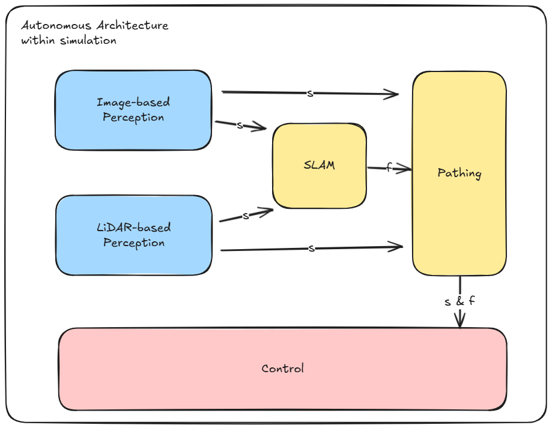
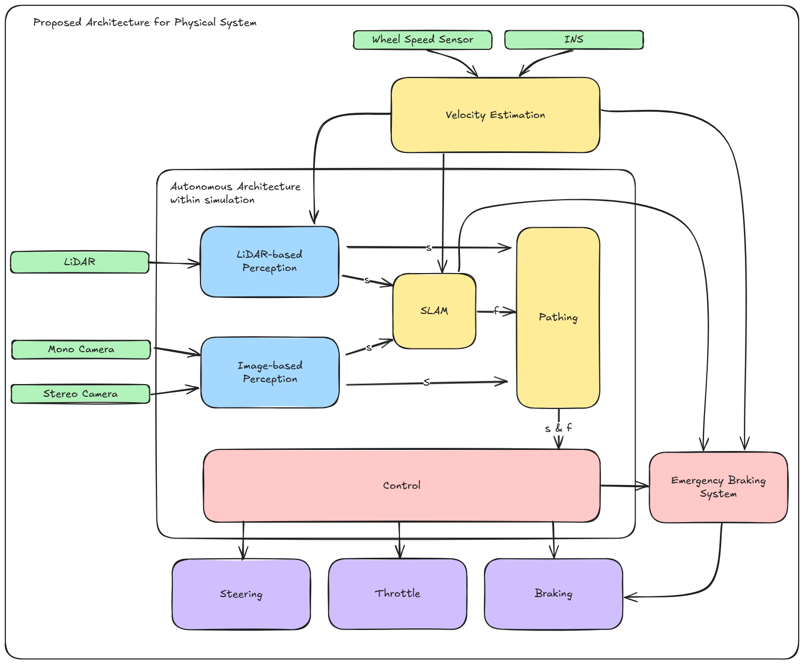

Pipeline Overview (TL;DR)
As outlined in the Quick Start Guide, a pipeline is a structured sequence of processing stages, where each stage takes input, transforms it, and hands it off to the next. This modularity enables scalable development and easier maintenance. By embracing modularity, we avoid the nightmare of monolithic scripts that resist evolution. Imagine revisiting your code five years from now, only to find that convolutional neural networks for image detection have gone the way of the floppy disk. With well-isolated pipeline components, swapping in the latest detection algorithm becomes a minor update—not a total rewrite.
The following block diagram is the overall simplified architecture structure for use within the simulations.
{kind=link}
Next, we have the overall proposed architecture for the physical system itself. The sensors are depicted in green blocks, the perception pipelines are depicted in blue, pipelines relating to mapping, localization, and path generation are depicted in yellow, and pipelines relating to movement commands are depicted in red. Lastly, actuators are depicted in purple blocks.
{kind=link}
We will go over a brief description of what each pipeline does and how it integrates with other pipelines.
Perception Pipeline
There are two perception pipelines mainly for robustness and safety, i.e. should one fail, we can fall back to the other perception pipeline. These pipelines are the LiDAR-based and image-based pipelines respectively.
LiDAR-based Perception
Structured as:
- Pre-Processing:
Removes the points behind the car using a box filter.
Applies a ground removal algorithm to separate cones from the ground.
- Cone Detection:
Clusters the point cloud.
Reconstructs cone regions from the original cloud to recover dropped points.
Filters clusters based on expected size and shape criteria derived from LiDAR parameters and distance
- Color Estimation:
Uses LiDAR intensity patterns to differentiate colors, e.g. yellow-black-yellow for yellow cones
Employs ML algorithms trained on the intensity of images to classify cones as blue, yellow, orange, or unknown.
Image-based Perception
Structured as:
- Uses camera input to detect and classify cones on the track depending on color.
Uses convolutional neural networks (e.g. YOLOv8) for cone recognition.
Trained on the Formula Student Objects in Context (FSOCO) cone dataset.
Applies image preprocessing (e.g., distortion correction, HSV thresholding) for reliable detection.
Outputs pixel-space detections and converts them to world coordinates using camera calibration.
Publishes detected landmarks to a ROS2 topic for use in SLAM and planning pipelines.
Path Generation Pipeline
Structured as:
Takes cone positions as input and generates a drivable centerline path.
Uses Delaunay triangulation and/or spline fitting to interpolate a smooth trajectory.
Ensures path meets dynamic feasibility constraints like curvature and clearance.
Filters outliers and misclassified cones before generating the path.
Can regenerate paths in real-time as new cone data becomes available.
Exports path as waypoints or continuous trajectory for downstream controllers.
Controls Pipeline
Structured as:
Uses the midpoints of the path from the path generation pipeline to compute steering commands.
Selects a lookahead point on the path based on vehicle speed and geometry.
Minimizes lateral error by geometrically aligning the vehicle’s heading to the lookahead point.
Adjusts lookahead distance dynamically to balance responsiveness and stability.
Assumes constant speed or integrates with a throttle/brake controller if available.
Outputs steering angles to be consumed by the vehicle’s actuation layer.
SLAM Pipeline
Structured as:
Simultaneously estimates vehicle pose and builds a map of cone landmarks using FastSLAM 2.0.
Uses a particle filter where each particle carries its own map hypothesis.
Updates landmark positions and vehicle state using sensor data and motion model.
Incorporates LiDAR and camera observations to improve robustness in sparse environments.
Efficient for real-time performance in environments with many static landmarks.
Supports loop closure and re-localization by maintaining particle diversity.